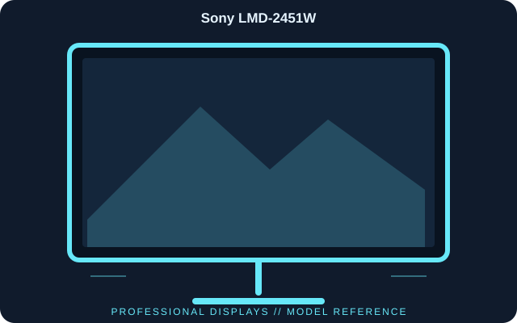

[ INDIVIDUAL COMPONENT // DISPLAYS ]
Sony LMD-2451W
A 24.1-inch widescreen professional LCD from Sony’s LMD series, with a broad set of legacy and broadcast signal inputs for studio and field workflows.

IDENTIFICATION: Sony LMD-2451W; 2008 generation. Verify the full model code, region and hardware revision on the unit label. Published specifications describe the identified configuration; its matching manual and label take precedence if revisions differ.
Published specifications
| Catalog subcategory | Professional Displays |
|---|---|
| Exact model | Sony LMD-2451W |
| Panel / native resolution | 24.1-inch a-Si TFT active-matrix LCD, 1920 × 1200 (16:10) |
| Typical luminance / contrast | 400 cd/m² / 1000:1 |
| Inputs | HD/SD-SDI, HDMI, DVI-D, composite, component Y/Pb/Pr and RGB |
| Outputs | SDI and DVI-D loop-through; analog outputs vary by connection mode |
| Physical dimensions | Approximately 565 × 400.2 × 99 mm without stand |
| Weight / power | Approximately 9.6 kg monitor-only; about 120 W |
Compatibility & connectivity notes
The LMD-2451W accepts multiple professional and consumer formats, but each connector has a defined supported raster/rate list; consult the operating instructions rather than assuming every format works on every input. SDI outputs are loop-through, not independent conversion. For legacy analog component/RGB, use the specified connector mapping and terminated cabling.
Preservation notes
Record the complete model suffix, serial/date code, input selection, source device, cable or adapter, tested timing and observed condition. Retain the matching regional manual and any calibration or service records with the display. Follow the manufacturer’s cleaning and service instructions; do not open CRT equipment without appropriate high-voltage training.
Manufacturer documentation & authoritative sources
- Sony Professional — LMD-2451W product informationManufacturer documentation and model-specific reference.
- Sony — LMD-2451W operating instructions and supportManufacturer documentation and model-specific reference.